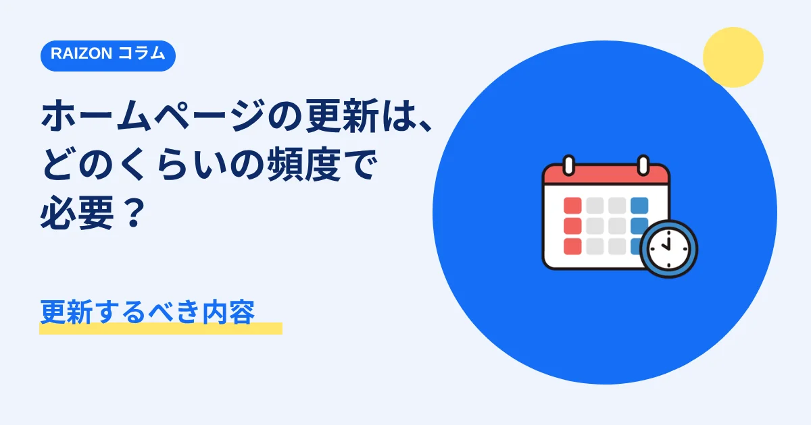

ホームページの更新は、どのくらいの頻度で必要？更新するべき内容｜東大阪の個人事業主さんへ

「ホームページは、作ったら、そのままでいい」と思われがちですが、情報が古いままだと、お客様に不安を与えてしまうことがあります。とはいえ、毎日更新する必要はありません。どのくらいの頻度で、何を更新すればよいか、東大阪をはじめ、大阪・奈良・京都の個人事業主・小さなお店向けに、まとめました。
- 「必ず更新しないといけない情報」と、「余裕があれば更新する情報」に分けて考える
- 営業時間・料金・連絡先が、古いままだと、信頼を落とす原因になる
- 更新が苦手なら、相談しながら更新できる体制を、あらかじめ用意しておく
必ず更新したい情報
- 営業時間・定休日：変更があったら、すぐに。祝日や年末年始の予定も
- 連絡先・住所：電話番号やメールアドレスが変わったら、すぐに
- 料金・メニュー：価格を変更したときは、すみやかに
- お知らせ：臨時休業や、イベントの案内
余裕があれば更新したい情報
- 新しい写真（店内、商品、作業の様子）
- お客様の声（掲載の許可をいただいたもの）
- 実績や事例の追加
- よくある質問の追加
更新の頻度の目安
| 内容 | 目安 |
|---|---|
| 営業時間・連絡先などの基本情報 | 変更があったとき（すぐに） |
| お知らせ | 必要なとき（月1回程度でも十分） |
| 写真・実績・お客様の声 | 数か月に1回、見直す |
あくまで目安です。事業の内容によって、ちょうどよい頻度は変わります。
更新が苦手・時間がないときは
自分で更新するのが難しい場合は、制作会社に、更新を依頼する方法があります。契約の前に、「公開後の更新・修正は、料金に含まれるか」「依頼の方法は何か」を確認しておくと安心です。
RAIZONの場合
RAIZONは東大阪市を拠点に、大阪・奈良・京都の事業者さんも、オンラインでサポートしています。月額プラン（初期制作費0円・月額9,800円（税抜））には、月4回までの修正・更新が含まれます。LINEやメールで、変更内容を送っていただければ、反映します。7ページ目以降のページ追加や、デザイン全体の変更などは、別途お見積もりです。
よくある質問
更新しないと、検索に不利になりますか？
更新の頻度だけで、順位が決まるわけではありません。ただ、情報が古いままだと、お客様の信頼を、損なうことがあります。まずは、基本の情報を、最新に保つことを優先してください。
ブログやお知らせは、必ず必要ですか？
必須ではありません。続けられる範囲で、お知らせを載せるだけでも、十分です。無理なく続けられる方法を、選びましょう。
更新を頼むと、別料金になりますか？
会社や契約によって異なります。RAIZONでは、月4回までの修正・更新は、月額に含まれます。詳しくは、料金のページをご覧ください。
ほかのコラム
 料金・費用
料金・費用大阪・東大阪の飲食店ホームページ制作｜費用の目安と食べログ・SNSとの使い分け
大阪・東大阪で飲食店のホームページ制作を頼むときの費用の目安を、買い切りと月額制に分けて整理しました。食べログ・Googleマップ・Instagramとの使い分け、制作会社への確認項目、見積もりの見方も解説します。
 制作の基礎
制作の基礎東大阪の工務店・リフォーム会社のホームページに載せたい7つのこと｜施工事例・流れ・見積もり
東大阪の工務店・リフォーム会社がホームページを作るとき、載せておきたい情報を7つに整理しました。施工事例、対応できる工事とエリア、工事の流れと見積もり、会社の情報、保証とアフター、料金の考え方、問い合わせ方法をやさしく解説します。
 集客・運用
集客・運用ホームページから問い合わせを増やす5つの工夫｜電話・フォーム・載せる内容
ホームページを作ったのに問い合わせが少ない、という小さなお店・事業者さん向けに、問い合わせにつなげる5つの工夫を解説します。電話番号の見せ方、ボタンの置き場所、フォームの項目、料金や流れの書き方、写真での安心感を、やさしくまとめました。